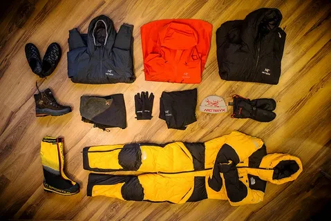
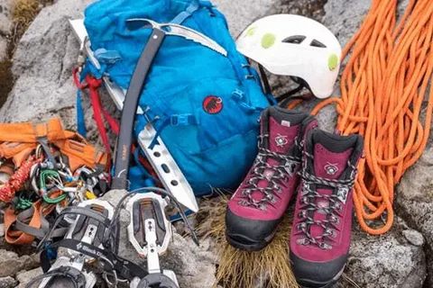
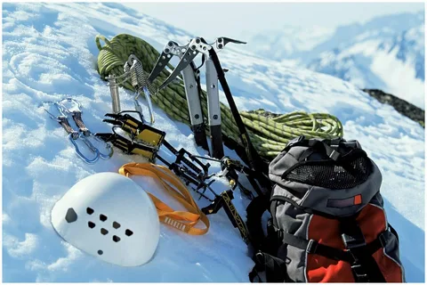

Условия Заполярья не прощают ошибок. Безопасность и комфорт на маршруте напрямую зависят от веса рюкзака и надежности вещей. Ниже собран оптимальный комплект снаряжения, разделенный по категориям.

Бивак и лагерь
- Палатка (двухслойная, ветроустойчивая)
- Спальный мешок (комфорт от -5°C)
- Коврик (надувной или плотная пенка)
- Горелка + ветрозащитный экран + газ

Одежда и обувь
- Горные ботинки с жесткой подошвой
- Мембранная куртка и брюки (штормовой слой)
- Термобелье (влагоотводящее и теплое)
- Флисовая кофта или легкая пуховка

Важные мелочи
- Рюкзак (70–85 литров) + накидка от дождя
- Треккинговые палки
- Гермомешки для документов и одежды
- Налобный фонарь и запасные батарейки